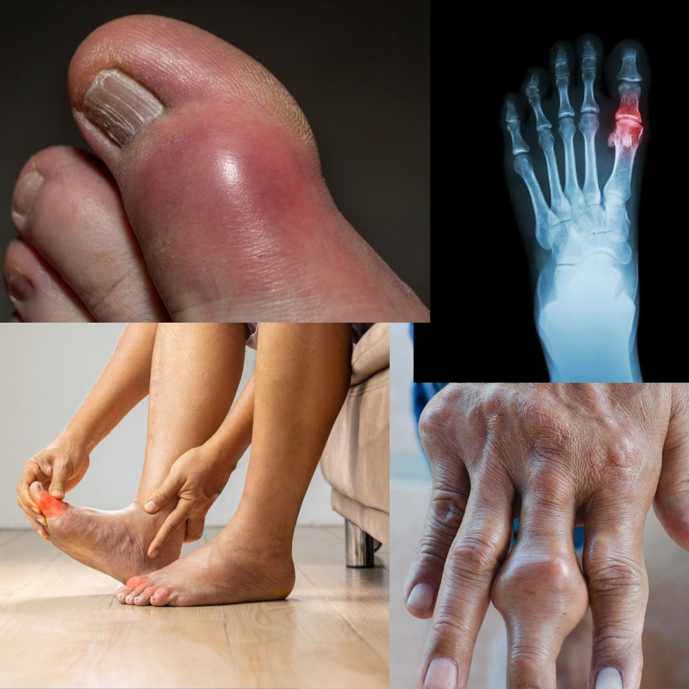

Could Your Joint Pain Be Gout? Symptoms, Causes & Treatment
You go to bed feeling fine, and a few hours later you are woken by an intense, throbbing pain in your big toe. The joint is red, hot and so swollen that even the weight of the bedsheet is unbearable. Many people assume they have twisted their foot or have an infection. In fact, this is the classic picture of gout, the most common form of inflammatory arthritis. The good news is that gout is one of the most treatable joint diseases once it is properly understood.
What Is Gout?
Gout happens when there is too much uric acid in your blood. Uric acid is a normal waste product made when the body breaks down substances called purines, found in our own cells and in many foods. Usually it dissolves in the blood and leaves the body through the kidneys. When levels stay too high, it can form tiny, needle-shaped crystals inside a joint. Your immune system reacts to these crystals as if they were an invader, which causes sudden and severe inflammation.
Not everyone with a high uric acid level develops gout, but the higher the level and the longer it stays high, the greater the risk.
The Warning Signs of a Gout Attack
A gout attack has a very recognisable pattern:
- Sudden onset, often at night or in the early morning, reaching its worst within 12 to 24 hours.
- The big toe is the classic target, but gout can also affect the ankle, midfoot, knee, wrist, fingers and elbow.
- The joint is red, hot, shiny and swollen, and extremely tender to touch.
- You may feel unwell, with a low fever.
- Without treatment, the attack usually settles in one to two weeks, sometimes with peeling skin over the joint. This does not mean the gout has gone: it is likely to come back.
What Triggers an Attack?
An attack often follows a sudden change in uric acid levels or a particular trigger. Common ones include:
- Alcohol, especially beer and spirits.
- Sugary drinks and fruit juices, which contain fructose that raises uric acid.
- Purine-rich foods: red meat, organ meats (liver, kidney) and some seafood such as sardines, anchovies and shellfish.
- Dehydration, for example after a long day in the heat, or too little water.
- Crash diets or fasting, which can suddenly change uric acid levels.
- Illness, injury or surgery.
- Certain medicines, such as water pills (diuretics) and low-dose aspirin. Never stop a prescribed medicine on your own; ask your doctor first.
Who Is at Risk?
Gout is more common in men, and in women after the menopause. Your risk is higher if you have a family history of gout, are overweight, or live with high blood pressure, diabetes, high cholesterol or kidney disease. Gout is not simply caused by “eating too richly”: genes and how well your kidneys clear uric acid play a major role, which is why some people develop gout despite a modest diet.
Is It Really Gout? How It Is Diagnosed
Several conditions can look like gout, including joint infection, pseudogout (a similar crystal arthritis), an inflammatory arthritis such as rheumatoid arthritis, an osteoarthritis flare, or an infection of the skin over the joint. Diagnosis usually combines:
- Your story and an examination of the affected joint.
- A blood uric acid level. Be aware that it can be normal during an attack, so a normal result does not rule gout out. Kidney function is also checked.
- Joint fluid analysis. When possible, a small sample of fluid is drawn from the joint and examined under the microscope for uric acid crystals. This is the most reliable test and also rules out infection.
- Imaging. X-rays, ultrasound or a special CT scan can show crystal deposits or joint damage, particularly in long-standing gout.
What Happens If Gout Is Left Untreated?
Repeated attacks are not harmless. Over the years, uric acid crystals can pile up and cause:
- Tophi: firm, chalky lumps under the skin, often around the fingers, hands, elbows or toes, as in the swollen finger joint shown above.
- Permanent joint damage, with erosion of bone and cartilage, deformity and chronic pain.
- Kidney stones and, over time, damage to the kidneys.
Treating an Acute Attack
The sooner an attack is treated, the faster it settles. Your doctor may prescribe one of the following, chosen according to your kidneys, stomach, heart and other medicines:
- Anti-inflammatory painkillers (NSAIDs) for a few days.
- Colchicine, a medicine that works best when started early. It can interact with some common medicines, so the dose must be adjusted by your doctor.
- Corticosteroids, taken by mouth or injected directly into the joint, useful when NSAIDs or colchicine are not suitable.
At home, rest the joint, raise it, apply a cold pack wrapped in a cloth for 15 to 20 minutes at a time, and drink plenty of water. If you are already taking a long-term gout medicine such as allopurinol, do not stop it during an attack.
Preventing the Next Attack
Treating the attack is only half the job. Gout only truly goes away when uric acid is kept low enough for crystals to dissolve over time. For people with recurrent attacks, tophi, joint damage, kidney stones or kidney disease, this means a daily urate-lowering medicine such as allopurinol or febuxostat. A few important points:
- The usual target is a uric acid level below 360 µmol/L (6 mg/dL), and lower still if you have tophi.
- Treatment starts at a low dose and is increased gradually, with blood tests to guide the dose.
- Attacks can actually flare up in the first months, so your doctor may add a low-dose anti-inflammatory for 3 to 6 months as protection.
- It is usually a long-term treatment. Keep taking it even when you feel well: that is when it is working.
Lifestyle Habits That Help
Diet alone rarely cures gout, but it makes treatment work better:
- Cut back on alcohol, especially beer and spirits.
- Avoid sugary drinks and fruit juices; choose water.
- Limit red meat, organ meats, sardines and shellfish.
- Drink plenty of water through the day.
- Lose weight gradually if you are overweight. Avoid crash diets and prolonged fasting.
- Vegetables, fruit, whole grains and low-fat dairy products are good choices.
When to Seek Medical Help Quickly
A hot, swollen joint is not always gout. See a doctor promptly, or go to the hospital, if:
- 🔴 You have a fever or chills together with a red, swollen joint: a joint infection must be ruled out urgently.
- 🔴 It is your first attack, so that the diagnosis can be confirmed.
- 🟡 The pain is not improving after 2 to 3 days of treatment, or several joints are affected.
- 🟡 You have kidney disease, stomach ulcers, heart disease or take blood thinners, as many painkillers may not be safe for you.
The Bottom Line
Gout is a common, painful, but very treatable condition. A sudden, red, swollen joint deserves a proper diagnosis rather than guesswork, because the right treatment can stop attacks, protect your joints and kidneys, and keep you moving.
If you have had more than one attack, or your uric acid level is high, do not wait for the next one. Long-term treatment and a few sensible lifestyle changes can prevent gout from coming back.
Always consult your doctor before starting or stopping any medicine, especially if you have kidney disease or take other regular treatments.
Sudden painful, swollen joint, or repeated attacks of gout? Message directly and ask.
Message on WhatsAppThis article is general health information and does not replace a medical consultation. In a medical emergency, call SAMU (114) or go to your nearest hospital.